Nyzo version 476 (commit on GitHub) is the second of two updates to allow the mesh to be reopened for new verifiers.
The BlacklistManager was added to protect in-cycle verifiers from excess network traffic. The blacklistDuration, the time for which an IP address typically remains in the blacklist after a violation, is 10 minutes. The useIpTables argument can be changed by an individual operator if they do not want the verifier to use the system firewall to restrict connections.
In the static block, all iptables rules are flushed to avoid problems with lingering rules that may have been set by a previous instance of the verifier.
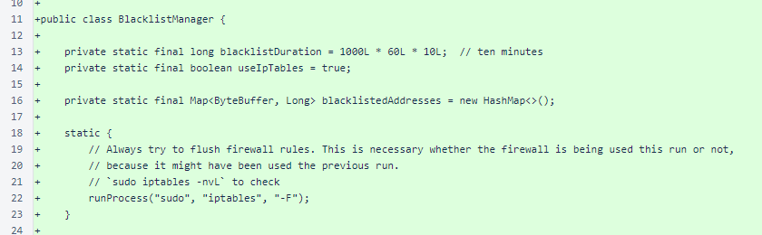BlacklistManager.addToBlacklist() adds a single IP address to the blacklist map. The address is only added when the BlockManager is initialized and has a complete cycle, because erroneous identification of verifiers as being out-of-cycle might happen otherwise.
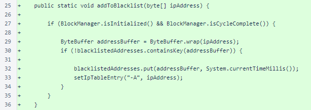BlacklistManager.inBlacklist() is used to enforce the blacklist.
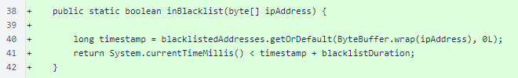BlacklistManager.getBlacklistSize() is used by BlacklistStatusResponse to provide information to the verifier operator.
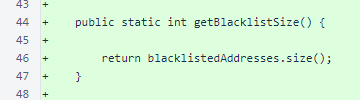BlacklistManager.performMaintenance() removes in-cycle node addresses from the blacklist. The allows the blacklist to mitigate attacks or inadvertent bursts from in-cycle verifiers without causing long-term mesh connectivity issues.
This method also removes expired nodes from the blacklist to control memory usage.
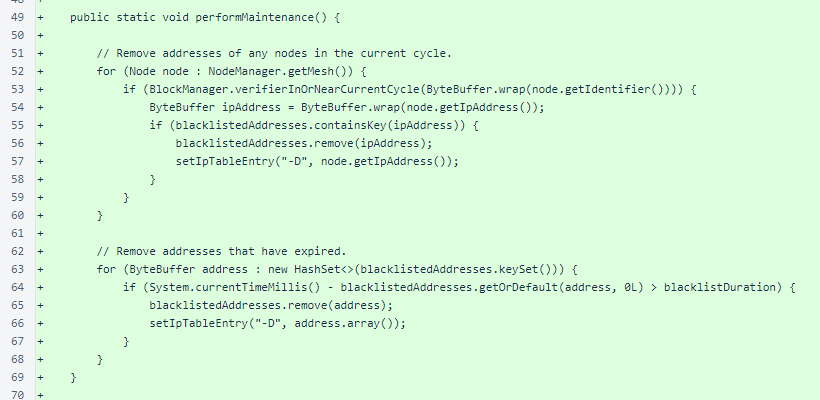BlacklistManager.setIpTableEntry() runs the iptables command to add or remove a firewall entry. The entry, when active, drops TCP packets from the specified source address to the MeshListener port.
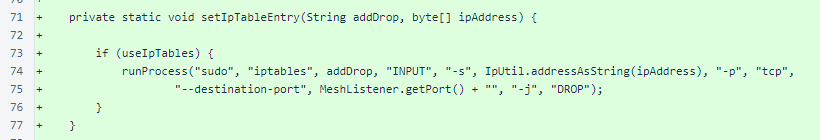BlacklistManager.runProcess() is a helper method used by the setIpTableEntry() method. BlacklistManager.readStream() is a helper method used to read the input and error streams of the process in the runProcess() method.

In the Block.chainScore() method, the base offset for a new verifier was changed from -6 to -2. This gives only the top new verifier a score lower than the next in-cycle verifier, where previously the top two new verifiers were assigned scores lower than the next in-cycle verifier.
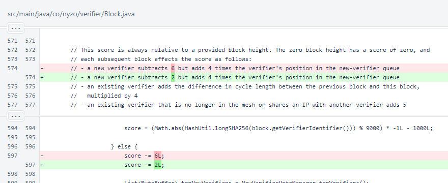In BlockManager, the currentAndNearCycleSet was added so that top-voted verifiers could be treated similarly to in-cycle verifiers for messaging purposes.
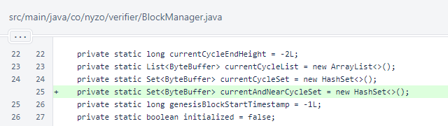Synchronization was removed from the BlockManager.verifiersInCurrentCycleList() and BlockManager.verifiersInCurrentCycleSet() methods to improve efficiency.
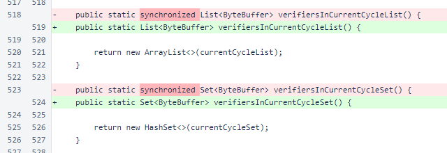Synchronization was removed from the BlockManager.verifierInCurrentCycle() method, and the BlockManager.verifiersInCurrentAndNearCycleSet() method was added. The diff's ordering of changes is mildly deceptive.
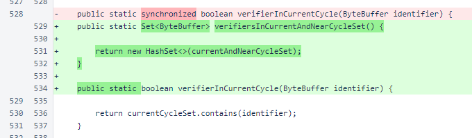The BlockManager.verifierInOrNearCurrentCycle() method provides lookup from the currentAndNearCycleSet.
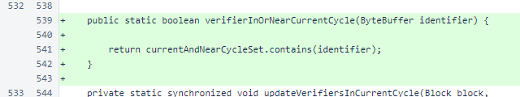In BlockManager.updateVerifiersInCurrentCycle(), the currentAndNearCycleSet is populated with the contents of the currentCycleList and NewVerifierVoteManager.topVerifiers().
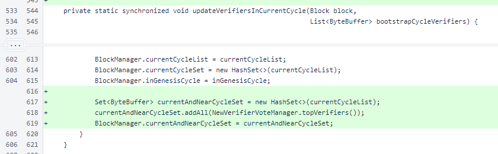In BlockVoteManager, the minimumVoteInterval was increased from 2.0 seconds to 5.0 seconds to improve stability of the voting process. The flipVoteMap was added to prevent a verifier's vote from being changed unless the same changed vote was received two consecutive times, separated by the minimumVoteInterval.
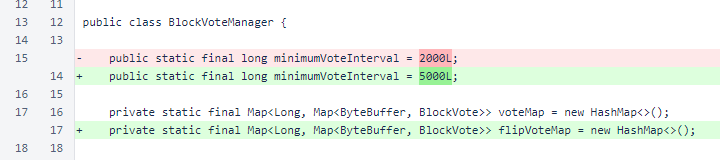The full Message object for a BlockVote is now passed to the BlockVoteManager.registerVote() method. The fields of this message are now stored on the vote to allow the votes to be shared later in BlockWithVotesResponse objects.
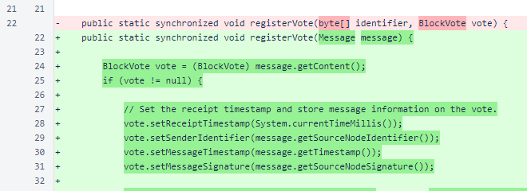The next section of the diff is largely due to indentation changes. Setting of the receiptTimestamp, with the addition of new fields, was just explained. Most of the vote registration code pictured here is unchanged. The new code, at lines 51 and 52, is fetching of the existing vote and checking whether it is null.
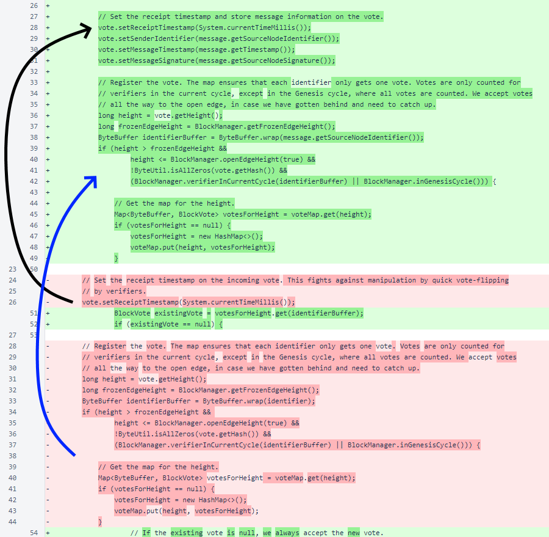If the existingVote is null, the new vote is registered.
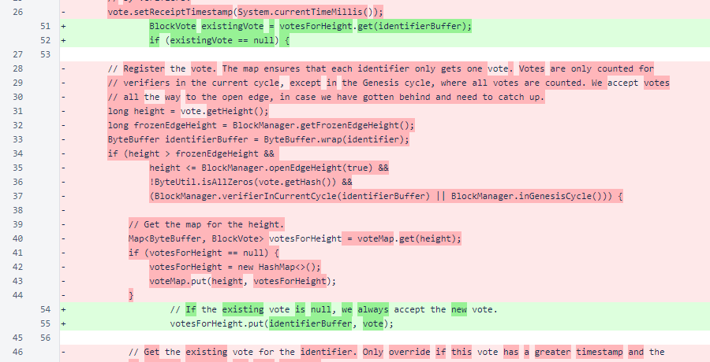When a verifier has changed its vote, the flipVoteMap is now used. This is an important new protection to avoid one-block forks in the blockchain. Instead of accepting and registering changed votes immediately, the changed votes are stored in the flipVoteMap, and a confirmation vote is required before the vote is updated in the primary map.
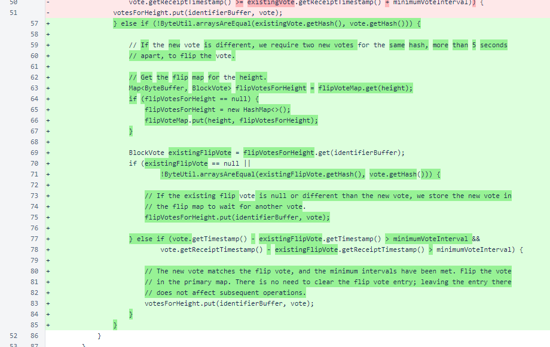In BlockVoteManager.removeOldVotes(), votes are now retained for 40 blocks behind the frozen edge to support the BlockWithVotesResponse. The new flipVoteMap is cleaned in this method, also.
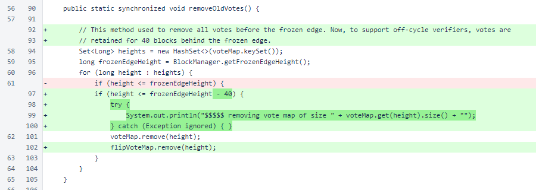BlockVoteManager.votesAtHeight() was planned to be a temporary entry in the StatusResponse. However, it has been more useful than anticipated, so it will be retained.
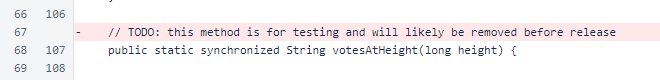BlockVoteManager.numberOfVotesAtHeight() provides the size of the vote map at the specified height. This is used in UnfrozenBlockManager.updateVote() to delay attempts to reach consensus until a suitable number of votes for the height have been tabulated.

BlockVoteManager.getLocalVotes() was removed. This method was previously used by NodeJoinResponse, but it is no longer included in the updated, less burdensome initialization process.
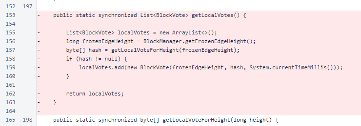In BlockVoteManager.requestMissingVotes(), fallback wait times were reduced to improve the speed of consensus when votes have been dropped. The call to registerVote() now passes the entire Message instead of just the identifier and BlockVote.
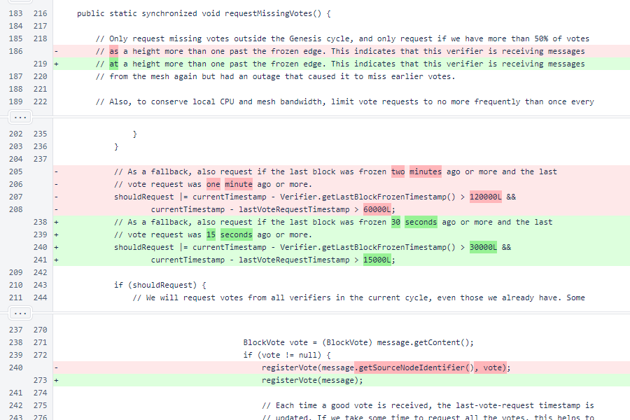Some log statements that were no longer needed were removed from ChainInitializationManager.
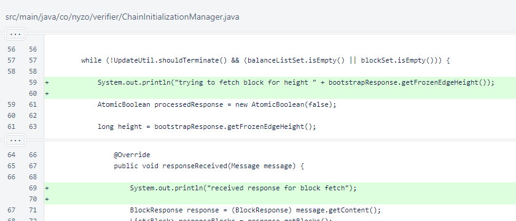Counters were added to MeshListener to track how many messages are accepted and rejected under the new message rules.
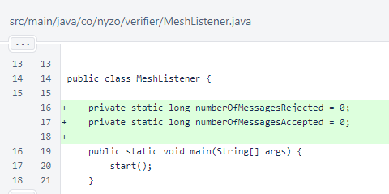In the outer thread of MeshListener.start(), the inline inner thread started in response to accepted sockets has been removed.
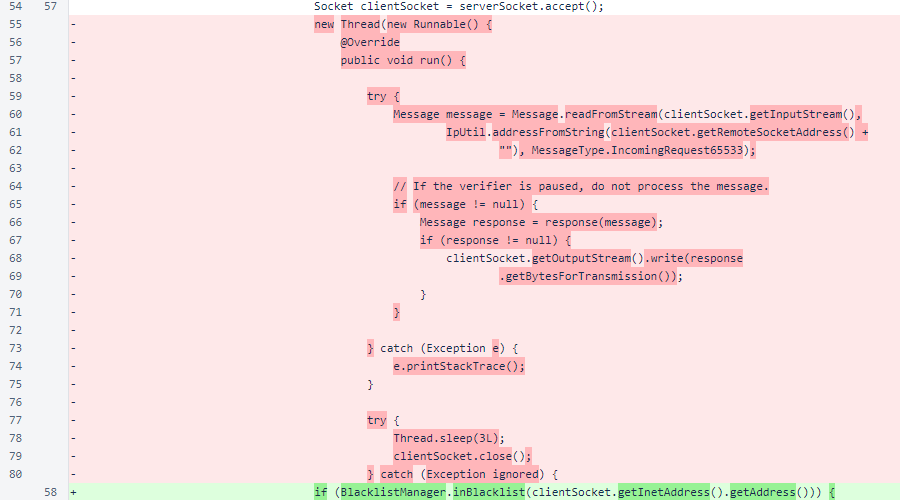The replacement code first checks if the socket is connected to a blacklisted IP address. If the IP is blacklisted, the socket is closed immediately. Otherwise, a thread is started and the clientSocket is passed to the readMessageAndRespond() method for processing. The appropriate counters are incremented in both cases.
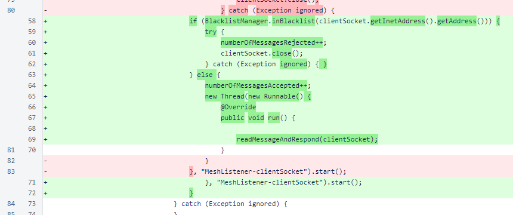The readMessageAndRespond() method processes the clientSocket. It reads the request message from the socket's input stream, produces a response, and writes that response to the socket's output stream. At the end of the method, the socket is closed.
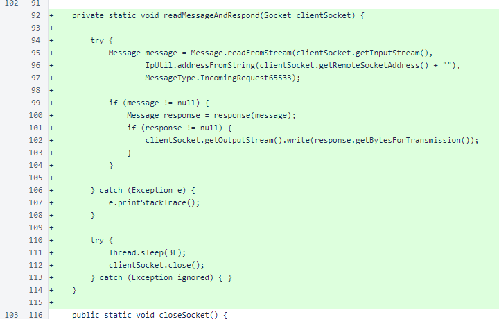In MeshListener.response(), the call to BlockVoteManager.registerVote() was changed to match the changes in that method. This allows additional fields from the message to be temporarily stored on the BlockVote objects to facilitate later production of the BlockWithVotesResponse.
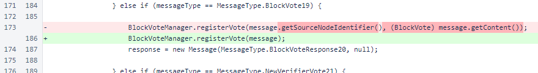The call to NodeManager.updateNode() was removed from the condition for MessageType.BootstrapRequestV2_35. This message type is no longer processed by that method. A condition was added to produce a BlockWithVotesResponse for MessageType.BlockWithVotesRequest37.
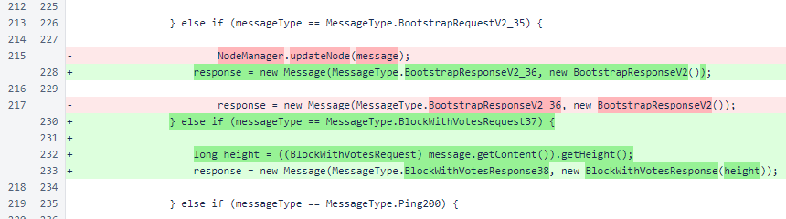In response to BlacklistStatusRequest416, a BlacklistStatusResponse is now produced. This allows the operator of a verifier to monitor the blacklist to ensure it is not causing communication problems.
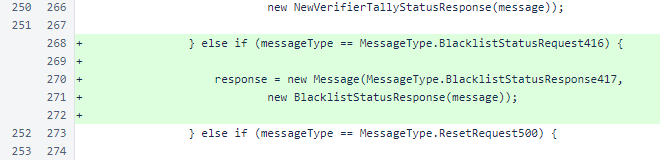Accessors were added for numberOfMessagesRejected and numberOfMessagesAccepted. These are used by BlacklistStatusResponse.
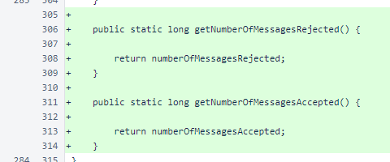In Message, the whitelist set was added. This is used for IP addresses that are exempt from the blacklist. The disallowedNonCycleTypes set contains messages that are not allowed to be sent from verifiers not in the cycle.
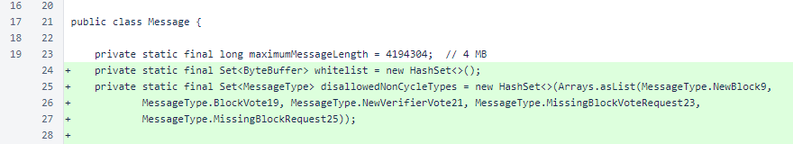The fullMeshMessageTypes set are messages for which out-of-cycle verifiers are also potential data sources for random-node fetches.
In the static block of Message, the whitelist is loaded.
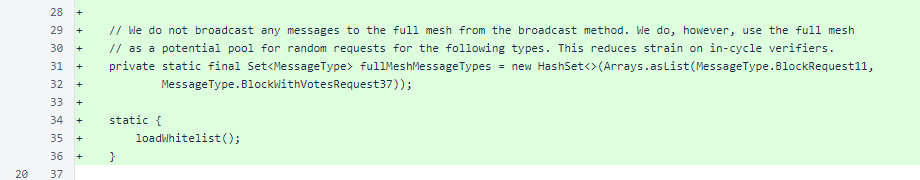In Message.broadcast(), the BlockManager.verifiersInCurrentAndNearCycleSet() method is now used. This does not change behavior. Previously, this method assembled its own set of verifiers in and near the current cycle.
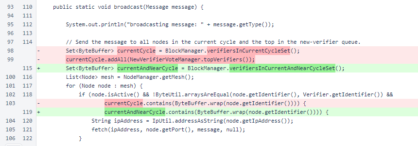In Message.fetchFromRandomNode(), the fullMeshMessageTypes are now considered when selecting a random node. Full-mesh message types can be fetch from any node, while other types must be fetched from in-cycle nodes.
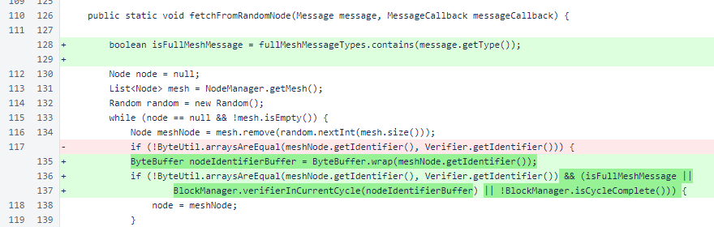Logging statements were added to communicate the node to which the request is made or if a node could not be found.
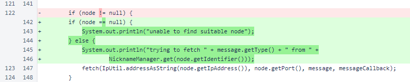The Message.fetch() method now filters outgoing messages to avoid sending messages that would result in blacklisting.
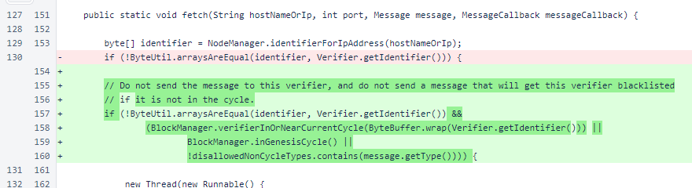In Message.fromBytes(), out-of-cycle verifiers sending disallowed message types are added to the blacklist. The blacklist improves efficiency of message rejection. The first message must be read to determine the verifier identifier. After the IP address is added to the blacklist, the socket can be closed before reading the message.
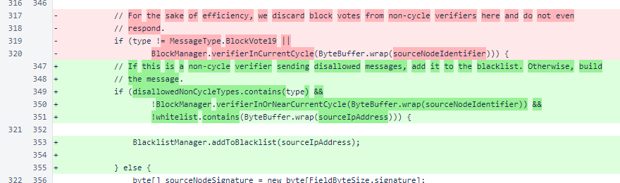In Message.processContent(), deserialization was added for BlockWithVotesRequest37, BlockWithVotesResponse38, and BlacklistStatusResponse417.
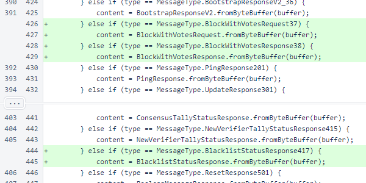Message.loadWhitelist() loads a list of IP addresses from /var/lib/nyzo/production/whitelist. These addresses are exempt from the blacklist.
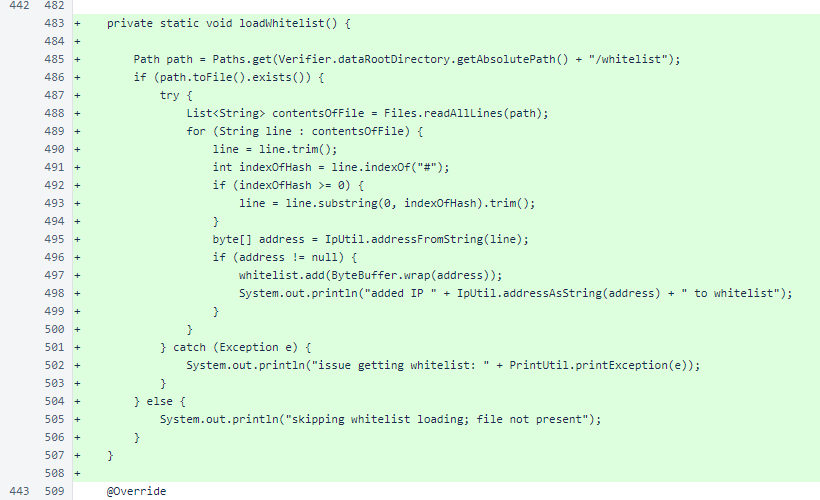In MessageQueue, the inBadState field was removed. This field was used to debug stalls of the MessageQueue, and it is no longer needed.
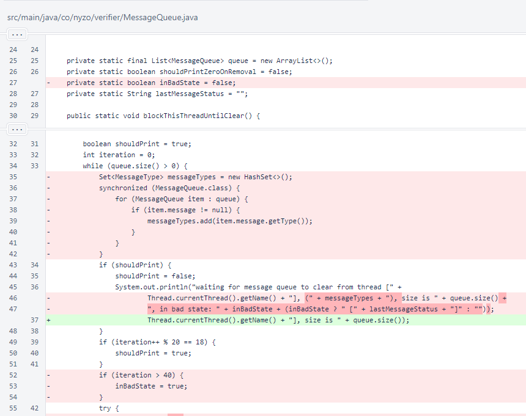The sleep in the MessageQueue.blockThisThreadUntilClear() loop was reduced from 0.5s to 0.1s. This allows the method to complete faster on average. Also, a 0.05s sleep was added after the loop to give the last message in the queue additional time to complete processing.
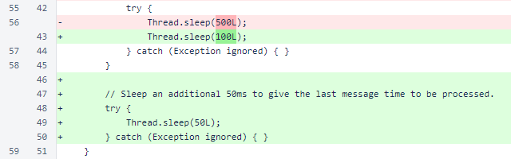In MessageQueue.add() and MessageQueue.next(), logging of inBadState was removed.
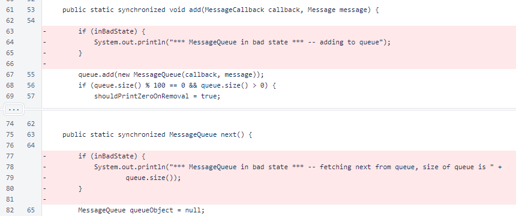In the main MessageQueue loop, the print statement for inBadState was removed, and printing of the exception was eliminated. Setting of the MessageQueue.lastMessageStatus field was added. In the event of future problems with the MessageQueue, this field can be used to determine what may have caused a stall.
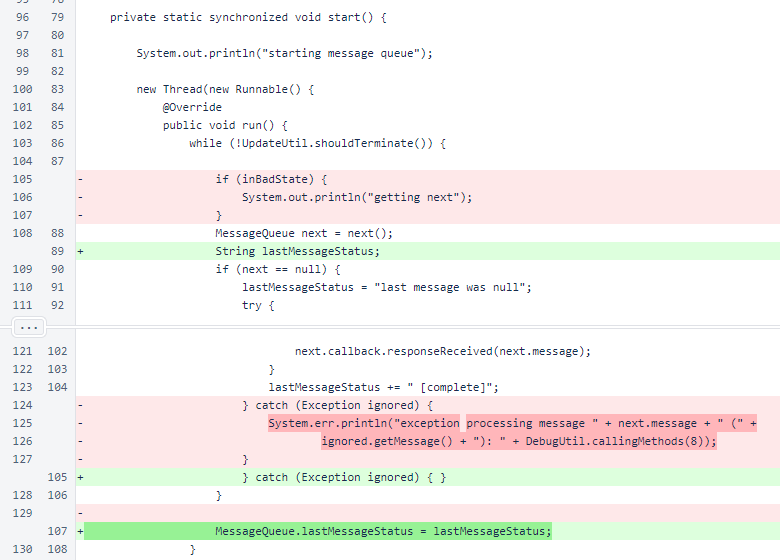BlockWithVotesRequest37, BlockWithVotesResponse38, BlacklistStatusRequest416, and BlacklistStatusResponse417 were added to MessageType.

In NewVerifierQueueManager, the consecutiveBlocksVotingForSameVerifier field was added to ensure that a verifier does not receive a vote for too long if it is not joining the cycle.
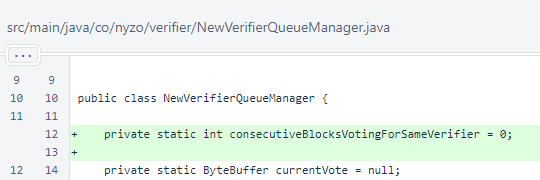In NewVerifierQueueManager.updateVote(), the vote is now registered locally even if this verifier is not in the cycle. A later condition is applied to avoid broadcast of votes from out-of-cycle verifiers. This is the condition that is true when the vote changes, so consecutiveBlocksVotingForSameVerifier is reset to 1.
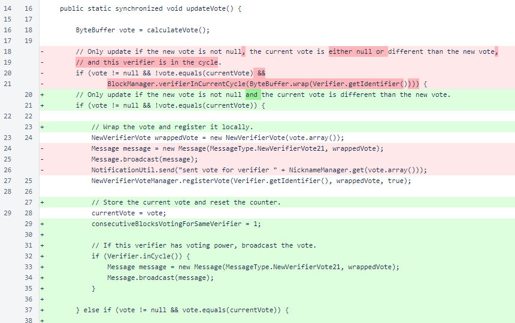When the vote has not changed, consecutiveBlocksVotingForSameVerifier is incremented. After allowing for approximately 50 blocks more than the blockchain-enforced entry interval, a selected verifier is demoted to give another verifier a chance to join.
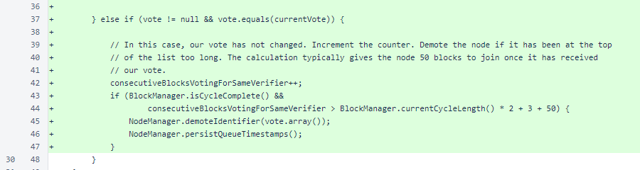An accessor is provided for currentVote. This is used by MeshStatusResponse.
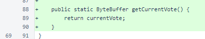In NewVerifierVoteManager.topVerifiers(), the list of verifiers is now limited to a size of 3. The list is now displayed.
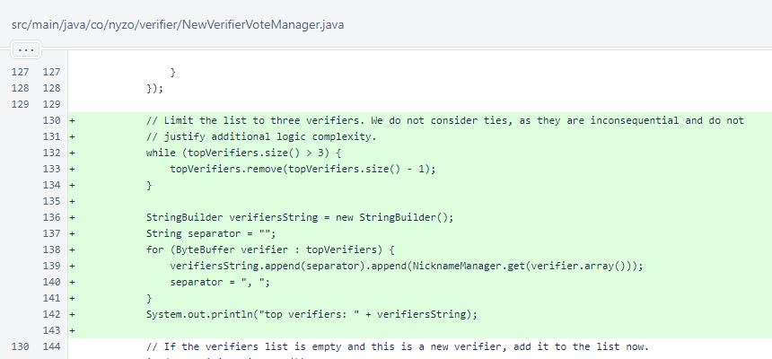In NodeManager, the new persistedQueueTimestamps map provides lookup of timestamps from previous runs of the verifier. The queue timestamps are periodically written to the queueTimestampsFile, and this file is loaded into the map in the class's static block.
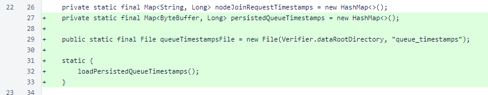When a new node is created, the persistedQueueTimestamps map is consulted. If a favorable timestamp for the node is available, it is applied to the node.
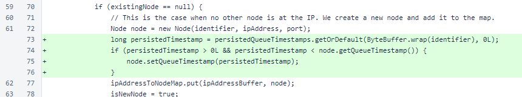The NodeManager.demoteIdentifier() method sets the timestamps for a specified identifier to the current timestamp. This sends the nodes to the end of the queue.
When the NodeJoinResponse is received in NodeManager.sendNodeJoinMessage(), the block votes from that response are no longer registered. These were originally included to allow a new verifier to quickly become aware of the state of consensus, but they were unhelpful and a waste of bandwidth. While the NodeJoinResponse still understands the inclusion of these votes in its serialized form, they are no longer serialized, and they are discarded if present during deserialization.
NodeManager.demoteInCycleNodes() is called periodically to ensure that verifiers that drop from the cycle are not immediately placed at the top of the entrance queue.
NodeManager.persistQueueTimestamps() writes queue timestamps to a file so that queue information does not reset each time a verifier restarts.
NodeManager.loadPersistedQueueTimestamps() reads the timestamp file into the persistedQueueTimestamps map. This map is then used to assign timestamps when nodes are added to the primary map.
In UnfrozenBlockManager.updateVote(), a comment was updated to clarify that the 0.2-second time calculation offset was not solely accounting for network jitter.
In the vote calculation of UnfrozenBlockManager.updateVote(), attempt for consensus is now delayed until votes from at least 75% of the cycle have been received. This avoids possible selection of unpreferred blocks based on the receipt of coherent votes from a small portion of the cycle.
In UnfrozenBlockManager.updateVote(), the vote is now broadcast regardless of whether it has changed. The new consensus process relies on multiple consecutive vote messages to change a vote, and this does not cause a problem with excess message traffic, because votes are still spaced by BlockVoteManager.minimumVoteInterval.
In UnfrozenBlockManager.castVote(), the entire vote message is now registered with BlockVoteManager to support building of the BlockWithVotesResponse. The Verifier.inCycle() method is now used instead of the BlockManager.verifierInCurrentCycle() method. This change is purely for succinctness and does not change behavior.
In UnfrozenBlockManager.attemptToFreezeBlock(), the delay and re-check before freezing a block was removed. This check is no longer necessary due to the vote-flip mechanism.
The UnfrozenBlockManager.performMaintenance() method is an encapsulation of behavior previously in the UnfrozenBlockManager.attemptToFreezeBlock() method. The only new code in this method is setting of lastBlockVoteTimestamp to a value of 0L. All other changes are indentation differences.
In Verifier, three counters were added for controlling the out-of-cycle tracking process. The intent of these counters is to transition all verifiers to use the new block-with-votes messages as support allows, falling back to legacy messages as necessary.
The new Verifier.inCycle() method is now used instead of the equivalent BlockManager.verifierInCurrentCycle() call. Fetching of a block based on the bootstrap response is now logged.
Logging was also added to indicate when verifier initialization has completed and the main loop is about to commence.
An additional check, intended to avoid blacklisting, is now performed before a block is transmitted to the cycle.
Requests for unfrozen blocks and for individual block votes are no longer allowed from out-of-cycle verifiers. So, if this verifier is not in the cycle, those requests are no longer made. Instead, requests are now made for frozen blocks bundled with votes. As this is a newer message that may not be widely supported, the old message that requests frozen blocks without votes is used as a fallback.
Cleanup due to freezing of a block is now logged. BlacklistManager.performMaintenance() and UnfrozenBlockManager.performMaintenance() are now included in this process.
When a block at a height divisible by 100 is frozen, the queue timestamps are written to a file so they will persist between runs of the verifier. Before the file is written, in-cycle nodes are demoted so they will not be able to jump to the front of the queue if they are removed from the cycle.
The Verifier.inCycle() convenience method was added to improve code readability.
Verifier.requestBlockWithVotes() requests blocks with bundled votes. This allows a verifier, in a single message, to get both the block and the votes that show the cycle accepted the block. The block is registered with UnfrozenBlockManager. The block-vote messages are reconstructed, and the votes are registered with the BlockVoteManager. Blocks will then be frozen with the typical mechanism.
Successes and failures are tracked to allow this verifier to adjust usage of this method if the cycle does not yet have broad support. As more of the cycle adopts this version and supports the new message, usage of the less-safe legacy method will automatically be tapered and eventually eliminated.
Verifier.requestBlockWithoutVotes() falls back to the universally supported BlockRequest11 message. This method is less safe because it does not verify votes and could potentially freeze an incorrect block.

A missing parenthesis was added to BlockResponse.toString().
In BlockVote, the comment for timestamp was modified to note that the timestamp in the vote is redundant. Also, three fields were added for storing properties from the Message. These fields are used to construct the BlockWithVotesResponse.
Accessors and mutators were added for the new fields.
The new BlockWithVotesRequest contains the height for a request.
BlockWithVotesResponse contains a Block and a list of BlockVote objects.
When serializing the BlockWithVotesResponse, the Block is included first, followed by the BlockVote list. While BlockVote objects contain height and blockHash values, these do not need to be written for each individual vote, as they are all the same as the height and hash of the block.
Deserialization in BlockWithVotesResponse.fromByteBuffer() reassembles the block first. Then, the method reassembles the list of BlockVote objects. Note that the response does not require a block to be included, but if a block is not included, the list of BlockVote objects must be empty.
An overload of toString() is provided for convenience.
The list of blockVotes was removed from NodeJoinResponse. These votes were unhelpful and a waste of bandwidth.
To maintain compatibility, the serialized version of NodeJoinResponse is still aware of the possible presence of the list of block votes. However, an empty list is always serialized, and any votes present in a serialized version are discarded.

PingResponse now uses the Message.putString() and Message.getString() convenience methods. This does not change behavior.
BlacklistStatusResponse is a MultilineTextResponse that reports the count of messages rejected due to the blacklist, count of messages accepted, and blacklist size.
BlacklistStatusResponse is serialized with a 16-bit list length specifier followed by the list of character strings.
BlacklistStatusResponse.toString() displays the number of lines in the response.

MeshStatusResponse has a new constant, maximumNumberOfLines, to limit the list size.
The list of nodes in MeshStatusResponse is now ordered by queue timestamp instead of identifier.
The TODO comments describe persistence of queue timestamps and demotion of in-cycle nodes in NodeManager. These features were both implemented in this version, and the TODO comments were inadvertently left in the code.

These release notes are incomplete.